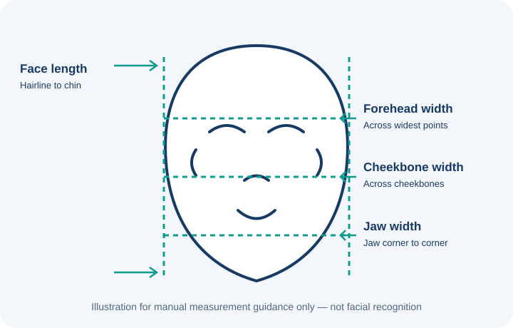

ClerFit
Health & Fitness Calculators
Face Shape Calculator

How to Measure
- Face Length: From hairline to bottom of chin
- Forehead: Widest part across forehead
- Cheekbones: Widest part of face across cheeks
- Jawline: Measure from jaw corner to jaw corner
Face Shape Styles Guide
| Face Shape | Best Glasses | Best Hairstyles |
|---|---|---|
| Oval | Rectangle, Square, Aviator | Pompadour, Side Part, Long Waves |
| Round | Angular, Rectangle, Geometric | Volume on Top, Faux Hawk, Layered Cuts |
| Square | Round, Oval, Thin Frames | Textured Crop, Soft Layers |
| Heart | Round, Bottom-Heavy Frames | Chin-Length Bob, Side Fringe |
| Diamond | Oval, Rimless, Cat-Eye | Side Part, Layered Bob |
| Oblong | Large Frames, Wayfarer | Fringe, Medium Volume Styles |